Conteúdo:
Objetivo: Entender e aplicar o sistema de fusos horários no mundo.
Introdução
Vimos na aula sobre Cartografia a importância da localização, dos pontos cardeais e das coordenadas geográficas.
Na aula de hoje, veremos como os fusos horários impactam, por exemplo, no comércio mundial, já que podemos fazer compras online no Japão enquanto eles estão sob o Sol, sendo que nós estamos sob a luz da lua.
Ao final, saberemos como as diferenças de horários entre os países são calculados e por que ter horários padronizados no mundo foi um grande avanço para as relações entre as nações distantes.
Por que os fusos horários são importantes?
Quando não havia uma padronização de horários no mundo, cada localidade, povoados, cidades seguiam a quantidade de iluminação solar disponível e possuíam um horário distinto para cada atividade.
O funcionamento do comércio, os horários dos trens, dos ônibus e até mesmo os trabalhadores que moravam e trabalhavam em cidades diferentes viviam um caos para se organizarem.
Quando o mundo possuía uma pequena população e as relações entre os lugares estavam submetidos às condições naturais, as atividades econômicas não estavam realmente interligadas.
No atual período da globalização, onde as compras online e as atividades do mercado de ações ao redor do mundo são instantâneas, o horário de compra e venda pode influenciar em muito os negócios pelo planeta. Alguns países, como a China, adaptam a questão dos fusos e adotam um único horário para o país inteiro. Assim, há cidades na parte Oeste que começam a manhã por volta das 10h, e na parte Leste, há outras em que já é meia-noite quando o sol se põe.
QUESTÃO PRÁTICA
A padronização através de fusos horários pelo mundo contribuiu para:

Por que existem fusos horários?
Desde as civilizações antigas como a Egípcia ou os Maias, a preocupação com a medição do tempo foi central. Acertar o horário quando o sol estivesse a pino, isto é, ao meio-dia, e contar o tempo utilizando ampulheta eram práticas comuns. Até o século XIX, o horário mundial ainda não havia sido padronizado.
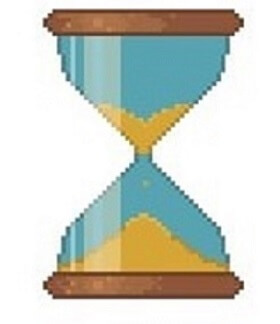
Nos Estados Unidos, por exemplo, com o advento da ferrovia que percorria longas distâncias no sentido Oeste-Leste, chegou-se a ter cerca de 300 horas oficiais diferentes ao longo das estradas de ferro.
A solução adotada pela Grã-Bretanha (ilha onde estão localizadas Escócia, Inglaterra e País de Gales) foi o de estabelecer a partir de 1830 uma única hora legal para o país, medida pelo Observatório Real de Greenwich. O sistema era fundamentado em eventos astronômicos, como o movimento de rotação terrestre, que vimos na aula 02. (Carvalho, 2011).
Rotação - O movimento de rotação terrestre é aquele que o planeta executa em torno de seu próprio eixo, em um período de, aproximadamente, 24 horas. Graças a ele, a Terra é achatada nos polos e expandida no Equador, não formando uma esfera perfeita. Mas é, também, por causa desse movimento que temos a variação dos períodos de claro e escuro, isto é, dias e noites na Terra, dentre outros fenômenos.
A rotação é um movimento realizado no sentido Oeste-Leste, clique para ver a imagem. Temos a impressão de que o Sol nasce no horizonte A Leste e com o passar das horas, ele descreve uma trajetória sobre nossas cabeças no sentido Leste-Oeste, até o pôr do Sol. Na verdade, é a Terra que está girando na direção contrária.
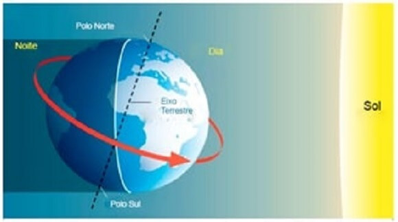
Desse modo, o Sol aparece no horizonte por volta das 6 da manhã, ele está na posição horizontal, na linha do horizonte. Já as 7 horas, a Terra já girou 15 graus e o Sol já estará 15 graus acima da linha do horizonte. Às 8 horas, 30 graus, as 9 horas 45 graus e assim por diante ao longo de todo o dia. Por isso somos induzidos a acreditar que o Sol está descrevendo essa trajetória, mas é o movimento de rotação da Terra que provoca tal “ilusão”. Veja aqui.
É esse movimento aparente do Sol o responsável pela sucessão das horas do dia, o que pode ser comprovado pelas sombras de objetos fixos nos locais em que vivemos (Carvalho, 2011).
Essa sombra que podemos ver nos objetos quando da passagem do Sol é a hora real ou solar, isto é, a hora que é definida pela passagem do Sol sobre um meridiano de um local na Terra. Lembra da aula passada que a linha do Equador divide a Terra entre duas metades, chamadas hemisférios? O Norte e o Sul. Já o meridiano de Greenwich divide a Terra entre hemisfério Leste e Oeste.
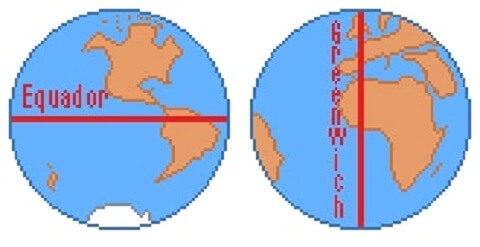
Também vimos que se dividirmos a circunferência da Terra (40.075 km) por 360º no Equador
obteremos o número de 111,3 km. Isso significa que a cada um 1º de longitude a Terra percorre 111,3 km.
Se a
Terra leva uma hora para percorrer 15º, logo ela vai levar 4 minutos para percorrer 1º grau.
15º ------ 60 minutos
1º ------- x
15x = 60
x = 60/15
x = 4 minutos.
A Terra leva, portanto, 4 minutos para percorrer a distância no Equador de
111,3
km. E podemos ser ainda mais precisos com essas distâncias. A Terra tem 360 meridianos de
1º de
longitude. Cada grau é dividido em 60
minutos que, por sua vez, se dividem em 60 segundos. Não se preocupem com os cálculos agora, vocês verão
esse assunto nas aulas de Geometria na disciplina de Matemática.
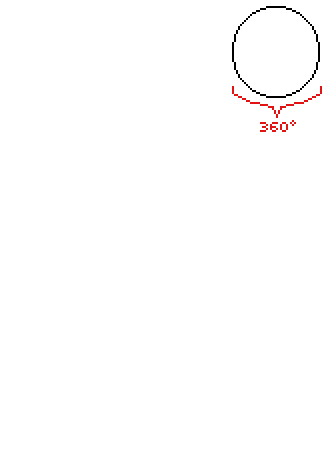
Se dividirmos 1º de longitude por 60 obteremos cerca de 1855 m, equivalente a 1’(um minuto) de longitude. E se dividirmos 1855 m por 60 novamente, teremos a largura de longitude com cerca de 30,9 m. Portanto, um 1” (um segundo) de meridiano equivale a 30 metros e nove centímetros de distância.
Com as atuais tecnologias surgidas com a incorporação dos satélites no mapeamento do mundo, podemos ter uma precisão bem maior e mapear até centímetros no Planeta. Mas nem sempre foi assim. Os fusos eram ainda um desafio grande para ser padronizado.
Em 1840 adotou-se o Greenwich Mean Time (GMT) – Tempo Médio de Greenwich, como forma de uniformizar a hora em toda a Grã-Bretanha. Em 1878, o canadense Sir Sanford Fleming (1827-1915), engenheiro chefe das ferrovias do Canadá, sugeriu adotar um sistema de tempo no mundo inteiro a partir do meridiano que passava pelo Observatório de Greenwich e propôs divisão do Planeta em fusos horários.
Teste sua habilidade de observação

Fuso horário - São linhas (meridianos) traçados de um polo ao outro, em um total de 24 faixas de modo a padronizar o cálculo de tempo em todo o planeta Terra. Cada hora representa 15º (resultado da divisão de 360º por 24h, que é o tempo de rotação da Terra em seu próprio eixo).
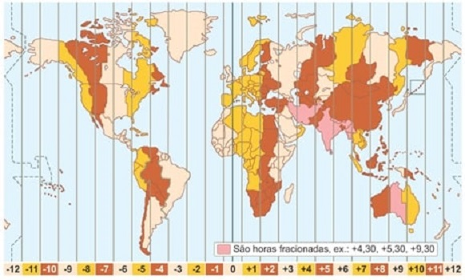
Greenwich é uma cidade inglesa localizada as margens do Rio Tâmisa. Em outubro de 1884, 41 delegados de 25 nações se encontraram em Washington – DC nos Estados Unidos, para a Conferência Internacional do Primeiro Meridiano e decidiram que:
- O dia universal seria um Dia Solar Médio e começaria à meia-noite em Greenwich contado no formatado de 0 a 24 horas;
- O primeiro Fuso Horário abrangeria uma faixa que vai de 07º 30’ E(East-Leste) a 07º 30’ W(West-Oeste), portanto, 15º de longitude. (Carvalho, 2011).
Sendo assim, houve uma convenção em que as horas aumentam no sentido Leste e diminuem no sentido Oeste até a longitude de 180º.
Dessa forma, à medida que nos deslocamos para o Oeste do planeta, diminuímos as horas e, à medida que nos deslocamos para o Leste, aumentamos os horários.
Por exemplo: se na cidade de Nova York – localizada no fuso -5GMT – são 8h, na cidade de Brasília – que está localizada no fuso -3GMT, são 10h, pois a capital brasileira encontra-se dois fusos a leste da cidade estadunidense. Observe:
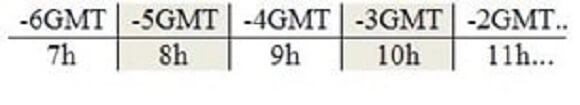
Nesse exemplo, é simples visualizar a diferença de horários, pois nos deslocamos dois fusos em direção a leste, então é só aumentar duas horas. Mas e quando a diferença envolve fusos localizados em uma distância maior ou em hemisférios diferentes? Existe uma maneira ou uma fórmula mais simples de se calcular isso?
QUESTÃO PRÁTICA
Quando vamos em direção Leste, as horas são acrescentadas, e quando vamos em direção Oeste, as horas são diminuídas. Isso acontece devido:
Como calcular fusos horários?
No período atual da globalização, as compras pela internet são muito populares. Imaginem se cada empresa pelo mundo tivesse um horário específico? Isso traria uma imensa confusão para as entregas dos produtos.
Outro exemplo refere-se as bolsas de valores. Enquanto no Japão as operações de compra e venda de ações estão encerrando suas atividades, no Brasil estamos apenas iniciando o fluxo de queda ou alta da Bolsa.
Indo mais longe, há estudos que medem, por exemplo, os efeitos negativos dos fusos horários para justificar cobranças de maiores taxas de transferência para transições bancárias entre países situados em fusos distintos. (Santos, 2018).
Isso nos dá uma ideia da importância do cálculo do fuso horário para a economia no mundo atual..
Calcule os fusos horários
Descubra o horário em qualquer parte do Planeta pelo fuso a partir do meridiano de Greenwich:
Digite o nome da cidade e o fuso horário em que ela se encontra. Ex. Londres, 0 fuso, descobrirá o horário em Londres. Digite Brasília, -3 horas e encontrará o horário de Brasília, atrasado (Oeste) em relação à Greenwich.
Teste seu conhecimento
Outro exemplo: Estamos no Brasil, localizado no meridiano 45º Oeste de Greenwich. Isso significa que se dividirmos 45 por 15º, teremos 3 horas. Porque 15º é a distância em que o planeta percorre dentro de uma hora. O Brasil está, portanto, a -3 horas de Greenwich, pois se encontra a Oeste do meridiano principal.
Se no Brasil, são 11h da manhã, que horas serão em Greenwich, localizado no fuso 0º?
Teste seu conhecimento
Vimos que o computador é capaz de realizar esse cálculo de forma muita rápida e eficaz. Entretanto, resta saber como ele faz isso.
Numa cidade A, localizada no fuso de 60º Oeste, são 14h. Que horas serão numa cidade B, localizada no fuso de 30º Leste?
Agora é com você!
Completa a tabela das horas e seus respectivos fusos horários em seu caderno.
Ex:
| Hora | Fuso |
|---|---|
| 01 | 15º |
| 02 | 30º |
| 03 | 45º |
| 12 | ?? |
Essa tabela vai te ajudar a fazer os cálculos dos fusos pelo mundo.
Exemplos de cálculos de fusos horários
Vamos avançar em nossos cálculos dos fusos horários. Recomendamos a realização de três diferentes passos. O primeiro seria identificar os fusos de origem e de destino; o segundo seria calcular a diferença entre eles, já o terceiro seria verificar se os horários deverão ser adiantados ou atrasados. Vamos considerar o Exemplo 01 para explicar mais detalhadamente cada um deles.
Exemplo 01: uma pessoa encontra-se na cidade de São Paulo, localizada no fuso horário -3GMT, e resolve fazer uma ligação, às 9h da manhã, para um amigo que se encontra em Tóquio, no fuso 9GMT. A que horas o amigo atenderá a ligação?
1º passo: identificar os fusos. Nesse caso, eles foram fornecidos no enunciado da questão, mas nem sempre isso acontece, como veremos no próximo exemplo. Assim,
Fuso de origem: –3GMT
Fuso de destino: +9GMT
2º passo: calcular a diferença entre os fusos. Basta subtrair o fuso da cidade de destino pelo da cidade de origem. Caso eles se encontrem em hemisférios diferentes, terão sinais diferentes e, inevitavelmente, serão somados.
9GMT – (-3GMT) = 12GMT
Portanto, a diferença entre São Paulo e o Japão é de 12 fusos, ou seja, 12 horas.
3º passo: verificar se os fusos serão somados ou subtraídos ao horário de origem. Sabemos que a ligação foi realizada às 9h da manhã e que a diferença das localidades é de 12 horas. Mas devemos somar ou subtrair esse horário em relação ao original? Para responder a essa pergunta e finalizar o exercício, basta observar em que direção a ligação está sendo direcionada.
Em direção a Leste, os fusos são somados. Em direção a Oeste, eles são diminuídos.
Assim, como o Japão fica a leste de Greenwich e São Paulo fica a oeste, então somamos:
9h + 12h = 21h.
A pessoa atendeu a ligação em Tóquio às 21 horas.
Lembre-se:
Locais no mesmo hemisfério, subtraem-se as suas longitudes:
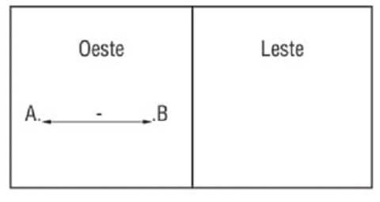
Locais em hemisférios opostos, somam-se as suas longitudes:
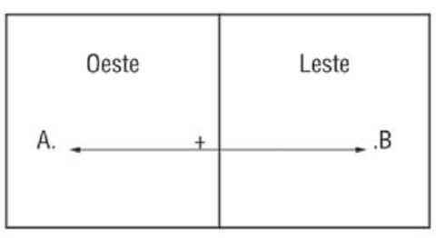
Vamos resolver, agora, o exemplo 02. Nele, não serão fornecidos os fusos, mas as longitudes. Além disso, faremos um deslocamento, cuja duração deverá ser levada em conta.
Exemplo 02: José Carlos atualmente mora e trabalha na cidade de Roma, localizada a 15º a Leste do Meridiano de Greenwich. Certo dia, ele resolveu ir para o Brasil, na cidade de Brasília, visitar a sua família, a 45º de longitude a Oeste de Greenwich. Saindo da Itália às 15h e com um tempo de viagem de 11h, ele chegou ao seu destino em que horário?
1º passo: identificar os fusos. Aqui, os fusos não estão expressos no enunciado, então teremos que calculá-los. Como afirmamos no início do texto, cada fuso possui 15º de longitude. Dessa forma, para transformar as longitudes em fusos, basta dividi-las por 15.
Cidade de origem: 15º ÷ 15 = 1GMT
Cidade de destino: -45º ÷ 15 = -3GMT
2º passo: calcular a diferença entre os fusos. Agora basta repetir o mesmo procedimento do exemplo 01, diminuindo o fuso de destino pelo fuso de origem.
-3GMT - 1GMT: -4GMT
Portanto, a diferença entre o local de origem e o local de destino é de 4 horas.
3º passo: verificar se somamos ou diminuímos os fusos. Como José Carlos está se deslocando do Leste em direção ao Oeste, então devemos diminuir os fusos em relação ao horário de origem. No entanto, não podemos nos esquecer de somar o tempo de viagem, que é de 11 horas. Assim,
15h (hora local de partida) – 4h (diferença entre os fusos) = 11h.
Em Brasília era 11h no início da viagem. Agora devemos somar o tempo que levou a viagem + 11h (tempo de viagem) = 22h.
Portanto, José Carlos chegou a Brasília às 22h.
Teste seu conhecimento
Numa cidade A, localizada no fuso 120º Oeste, são 21h. Que horas serão na localidade B, situada a 60º Leste?
Dica.
QUESTÃO PRÁTICA
Observe a figura abaixo:
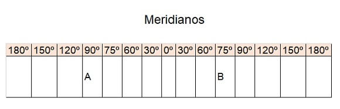
Considerando-se que em Greenwich o relógio acusa 15 horas, nas cidades situadas nos pontos A e B, serão, respectivamente:
Anote ai:
É possível voltar no tempo? O que a Linha Internacional de Mudança de Data tem a ver com isso?
É estranho pensar que haja um local em que o dia possa ter um início e um fim, uma vez que o movimento de rotação da Terra é ininterrupto, isto é, sem fim. Porém, em se tratando de fusos horários, foi necessário estabelecer um local na Terra em que ocorreria uma mudança de data. É a chamada linha internacional de mudança de data.
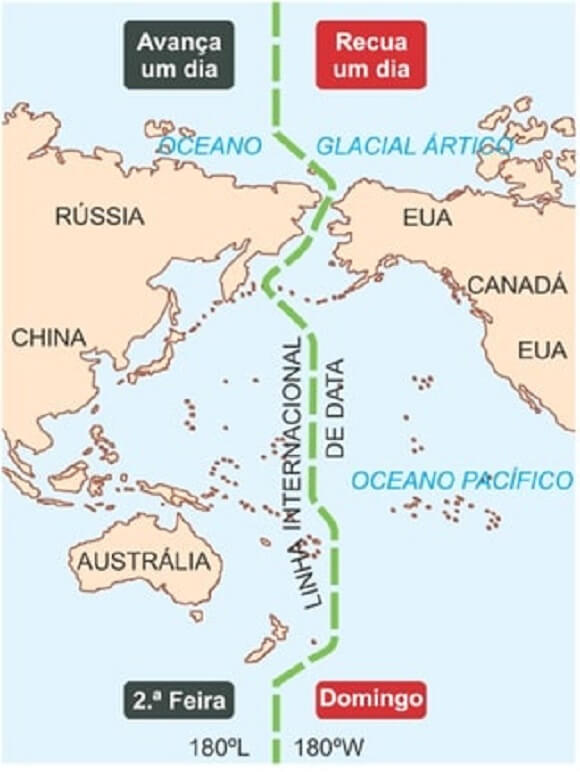
Linha internacional da Data - LID - Próximo ao antimeridiano de Greenwich, ou meridiano de 180 graus, convencionou-se estabelecer a Linha da mudança de Data. Ao atravessar essa linha de Oeste para Leste, você se adianta no tempo um dia, enquanto no sentido Leste para Oeste, você volta no tempo (atrasa) um dia.
Essa área foi pensada estrategicamente por ser pouco habitada. Mesmo assim, a linha foi ajustada para não passar diretamente sobre o meio dos países da região. Não é uma linha reta, o primeiro desvio ocorre no Estreito de Bering, no Oceano Pacífico na divisão entre Rússia e Estados Unidos. Também mantém a Rússia e o Alaska separados. Quando chega ao sul do Pacífico, a linha LDI é desviada para Leste e mantém as ilhas da Polinésia, como Tonga e a República das Ilhas Fiji.
É claro se você estiver próximo a LID é possível, por exemplo celebrar duas vezes a passagem do ano do dia 31 de dezembro para 1 de janeiro.
Mas suponha que você esteja na cidade de Auckland na Nova Zelândia e queira viajar para Santiago no Chile. A viagem tem duração de, aproximadamente, 19 horas. Ela vai cruzar o LID no sentido Leste-Oeste (atrasa um dia) pelo Oceano Pacífico. Digamos que saia do aeroporto as 18h do dia 3 de novembro. 18h + 19h de viagem é igual a 37h. Diminuímos 24h e obtemos o resultado de 13h do dia 03 em Santiago. Ou seja, a viagem saiu as 18h e chegou as 13h no mesmo dia, isto é, “voltou no tempo” 5h.
Os fusos horários no Brasil
O Brasil está localizado totalmente no hemisfério ocidental e possui mais de 4 mil km no sentido Leste-Oeste. Os fusos horários em nosso país foram adaptados as linhas de fronteiras e a rios como limites de Estados, como no exemplo dos Estados do Nordeste que foram literalmente “encaixados” no 2º fuso.
Fuso horário brasileiro - Localizado no hemisfério ocidental, o Brasil possui 4 fusos horários e seu horário está atrasado em relação à Greenwich.
1º fuso - 30º graus Oeste, estando 2horas atrasado em relação à GMT. Abrange as ilhas oceânicas, inclusive de Fernando de Noronha.
2º fuso - 45º Oeste, estando 3horas atrasado em relação a GMT. Abrange Amapá, Nordeste, Sudeste e Sul, Goiás, Tocantins, Distrito Federal e Pará. É o horário oficial do país.
fuso - 60º graus Oeste>, estando atrasado 4 horas em relação à GMT. Abrange Rondônia, Roraima, Mato Grosso do Sul, Mato Grosso, Amazonas.
4º fuso - 75º graus Oeste, estando 5 horas atrasados em relação à GMT. Abrange o Estado do Acre e a parte sudoeste do Amazonas.
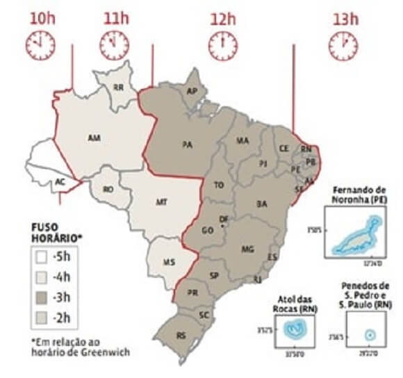
Fonte: https://mastergeografia.wordpress.com/
Infográfico - Resumo
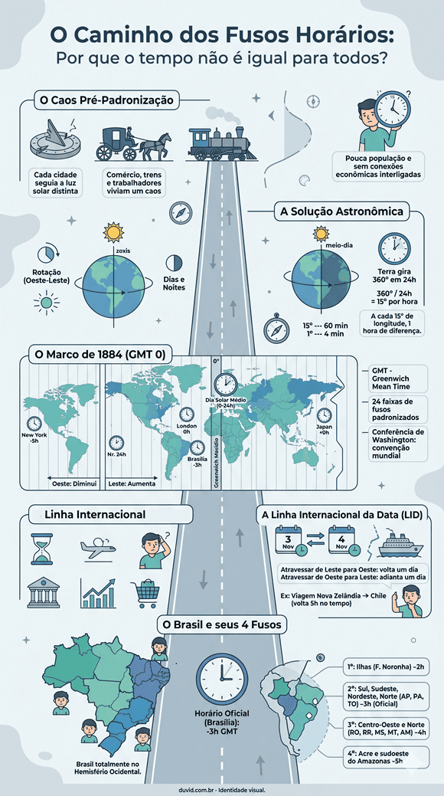
Fonte: Organizado e revisado pelo autor.As perguntas nos levam a questionar o status quo e a desafiar ideias preestabelecidas, impulsionando o progresso e a transformação em todas as áreas do conhecimento.
R: Caso atravessemos o núcleo da Terra, quem sabe poderíamos chegar à China, ou em outro local diametralmente oposto. Eles locais são chamados de antípodas. E possuem uma diferença de 180º, isto é, cerca de 12h entre eles.
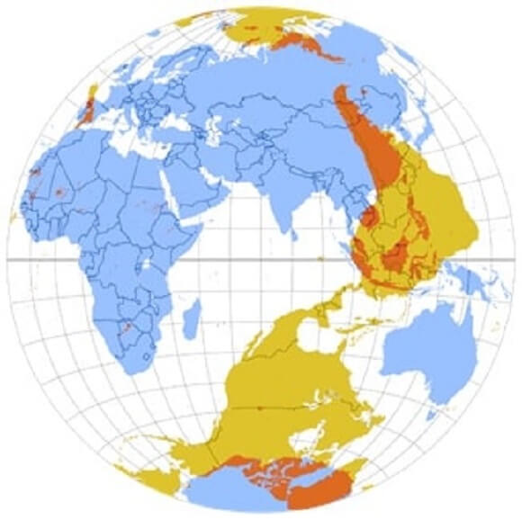
Suas latitudes são simétricas; isto é, a distância para o equador é a mesma, mas no outro hemisfério, portanto as estações de cada ano são opostas.
Para obter as coordenadas geográficas do antípoda de um ponto P, o procedimento é:
- Latitude da antípoda = Latitude do ponto P com o hemisfério invertido. (Norte a sul ou vice-versa)
- Comprimento do antípoda = 180° - Comprimento do ponto P com o hemisfério invertido (leste a oeste ou vice-versa)
Por exemplo, para calcular a antípoda de Pequim. (40°N 116°L)
A latitude do antípoda será:
- 40° N o inverso é 40° S
Logo Para calcular o comprimento:
- C = 180° - 116° = 64 ° O
Assim a antípoda de Pequim está a 40°S 64°O e fica em Conesa, Rio Negro, Argentina.
No Brasil, a antípoda do município de Barra do Quaraí, Rio Grande do Sul fica em Zhoushan (República Popular da China)
P: O que é horário de verão?
R: . É a prática de adiantar os relógios uma hora durante os meses da primavera e do verão, com o alegado objetivo de economizar energia nas regiões que mais recebem luminosidade solar nesse período do ano.
Pelo segundo ano seguido o Brasil não terá horário de verão com a publicação do decreto 9.772/19. O horário de verão foi usado de 2008 a 2018 com o objetivo de economizar o consumo de energia em 10 estados que registram maior luminosidade entre outubro e fevereiro.
Fonte: https://www.agazeta.com.br/brasil/ brasil-nao-tera-horario-de-verao-pelo- segundo-ano-consecutivo-1020.
P: Qual país tem mais fusos horários?
R: É a Rússia, maior país do mundo em extensão longitudinal. Ao todo, 11 fusos horários e mais de 10 mil quilômetros separam a região Oeste do extremo Leste. Assim, quando é meio-dia na capital, Moscou, já são 9 horas da noite nas cidades do extremo Leste (há um pequeno território no mar Báltico que não se comunica com o restante do país, cujos relógios são 1 hora atrasados em relação aos da capital.
Em 2º lugar vêm os EUA, com 9 fusos – incluem-se aí o Havaí, outras ilhas do Pacífico e o Alasca. O Canadá é terceiro, com 6 horários diferentes.
Caso fosse levada em conta apenas a área do território, a China deveria vir em seguida, com 5 fusos. Ocorre que o governo obriga todos os relógios do país a ser ajustados em um único horário: o da capital, Pequim. Isso pode ser bom para os negócios, mas é ruim para os habitantes da região oeste, que na maior parte do ano só veem o Sol nascer às 9 da manhã.
Antes de finalizar, vamos fazer as questões!
Para saber mais:
Referências Bibliográficas
CARVALHO, Edilson Alves de. Leituras cartográficas e interpretações estatísticas I. 2.ed. Natal: EDUFRN, 2011.
PENA, Rodolfo F. Alves. Como calcular fuso horário? Disponível em: https://mundoeducacao.uol.com.br.htm. Acesso em: 18 maio 2018.
BRASIL. Ministério da Educação. Base Nacional Comum Curricular. Brasília: MEC/CONSED/UNDIME, 2018.